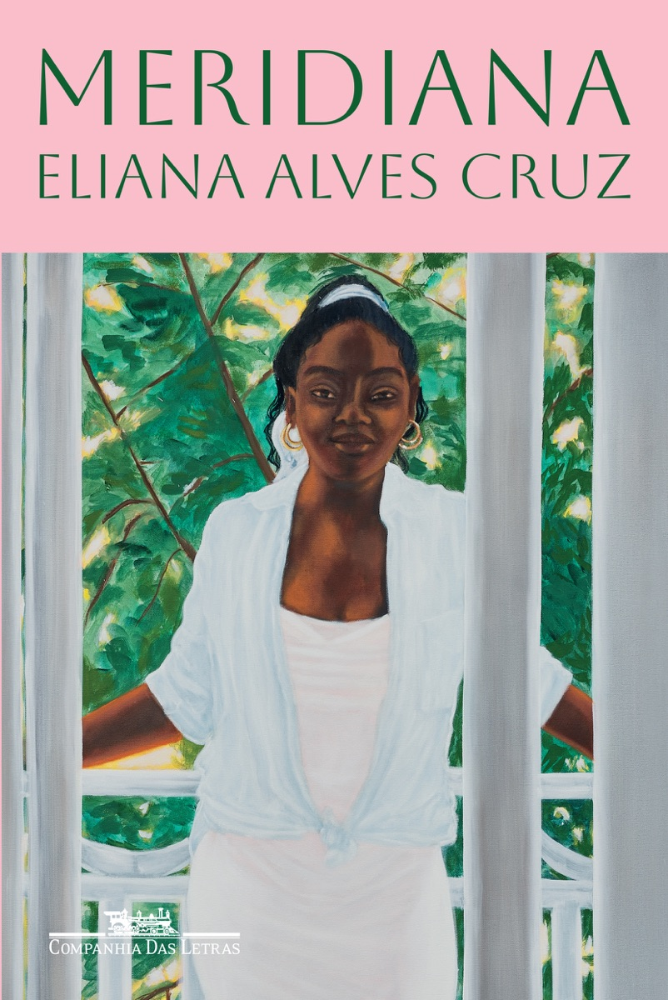
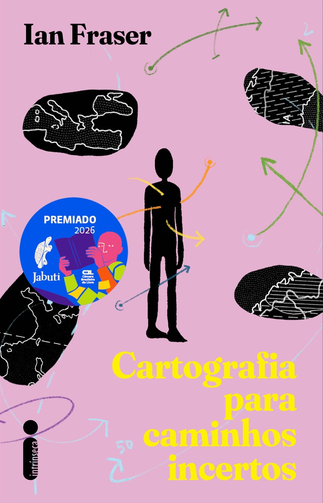
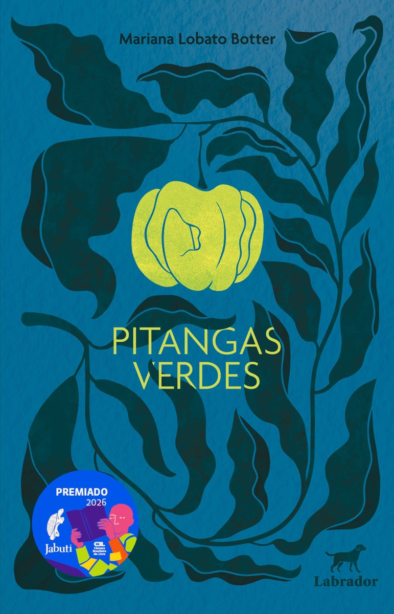
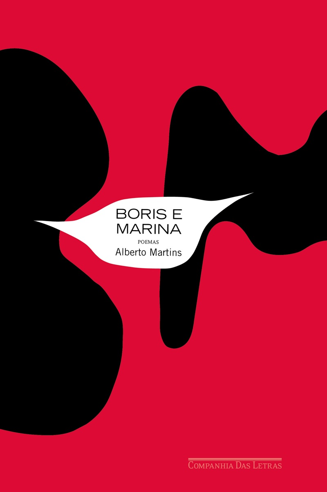

68º Prêmio Jabuti
Um perfil de livros do Instagram ganhou um Jabuti.
Categoria nova, com voto do público. Anúncio em 27/10, na Sala São Paulo.
finalmente.
Pedro Pacífico,
o @bookster.
Levou o Jabuti de Incentivo à Leitura – Cultura Digital, que estreou este ano e teve voto do público.
Concorreu com
Livro do Ano
Trincheira tropical
Ruy Castro
Segundo ano seguido em que Ruy Castro leva o Livro do Ano.
A Segunda Guerra Mundial vista do Rio de Janeiro. Também ganhou a categoria de Biografia e Reportagem.
Romance literário

Meridiana
Eliana Alves Cruz
★ 3,5no Livra · 2 avaliações
186 páginas.
A ascensão social de uma família negra. Em junho, já tinha levado o Prêmio Guimarães Rosa, da ABL.
Romance de entretenimento

Cartografia para caminhos incertos
Ian Fraser
★ 4,8no Livra · 3 avaliações
153 páginas.
Redenção é uma cidade que vive em romaria, sem parar. Realismo fantástico com cara de Nordeste.
E mais quatro pra anotar.
Estreia em romance
Pitangas verdes
Mariana Lobato Botter
Conto
Massaranduba
Abáz
Poesia
Boris e Marina
Alberto Martins
Juvenil
A única da sala
Tathyana Viana
Manda pra quem diz que falar de livro na internet não é coisa séria.
Qual desses entra na sua estante?


Salva pra lembrar
na Black Friday.